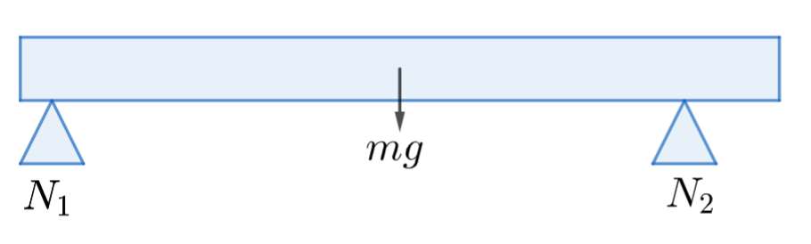

Tasapainoehdot
Tasapainoehdot#
Tarkastellaan jäykän kappaleen tasapainossa pysymistä. Jäykkiä kappaleita ovat esimerkiksi sillat, työkoneiden puomit ja vastaavat, sekä vaikkapa ihmisen raajat. Tasapainoehtojen avulla voi arvioida, millaisia voimia niveliin ja lihaksiin kohdistuu kuvan tilanteessa.
Jäykkä kappale on tasapainossa, jos seuraavat kaksi ehtoa toteutuvat:
kappaleeseen vaikuttavien voimien summa on nolla (= ei kiihtyvyyttä)
kappaleeseen vaikuttavien momenttien summa on nolla (= ei kulmakiihtyvyyttä)
Tasapainoehtoisin liittyvissä laskuissa tarkastellaan usein erilaisiin liitoskohtiin tai tukiin liittyviä voimia. Laskut sujuvat helposti, kun ensin piirretään kuva systeemistä. Kuvaan pitäisi lisätä kaikki oleelliset voimat.
Sitten täytyy valita piste, jonka suhteen voimien momentteja lasketaan. Eräs helppo tapa on valita tämä momenttiakselipiste jonkin voiman kohdalle. Silloin nimittäin yhden voiman momentiksi saadaan nolla, ja lasku helpottuu. Pisteen voi kuitenkin valita vapaasti, esimerkiksi sillan tai palkin päädyn kohdalta.
Voimat kannattaa kirjoittaa allekkain taulukoksi. Taulukkoon voidaan kirjoittaa kaikkien voimien etäisyydet kyseisestä pisteestä. Siten taulukkoon saa helposti myös voimien momentit. Lopuksi kerätään taulukosta yhdeksi yhtälöksi voimien summa, ja toiseksi yhtälöksi momenttien summa, ja ratkaistaan tämä yhtälöpari.
Esim. Laske tukivoimat \(N_1\) ja \(N_2\), kun 240 cm pitkä, 25 kg painava palkki on tasapainossa. Voima \(N_1\) sijaitsee 10 cm palkin päädystä ja voima \(N_2\) 30 cm palkin vastakkaisesta päädystä mitattuna.
Ratkaisu
Piirretään aluksi kuva:

Kuvaan on merkitty painovoima \(G\), tukivoimat \(N_1\) ja \(N_2\) sekä momenttipiste \(A\), joka on asetettu voiman \(N_1\) kohdalle.
Ainoa tunnettu voima on \(G = -25~\text{kg}\cdot 9.81~\frac{\text{m}}{\text{s}^2} = -245.25~\text{N}\). Tämän voiman etäisyys voimasta \(N_1\) on 1.1 m. Palkin painopistehän on puolivälissä palkkia eli 1.2 m palkin päädystä, mutta voima \(N_1\) on 10 cm päädystä oikealle.
Voiman \(N_2\) etäisyys on 2.0 m voimasta \(N_1\). Etäisyys saadaan laskemalla 2.40 m - 0.10 m - 0.30 m.
Kerätään voimat ja momentit taulukoon. Momenteista täytyy muistaa tarkistaa merkki. Voima \(G\) palkkia myötäpäivään ja \(N_2\) vastapäivään.
Voima (N) |
Voiman varsi (m) |
Momentti (Nm) |
|---|---|---|
\(N_1\) |
\(0\) |
\(0\) |
\(G=-245.25\) |
\(1.1\) |
\(-245.25\cdot 1.1 = -266.475\) |
\(N_2\) |
\(2.0\) |
\(2N_2\) |
Kootaan taulukon 1. sarakkeesta yhtälö, jonka mukaan voimien summa on nolla:
\(N_1-245.25 ~\text{N} +N_2=0\)
Taulukon 3. sarakkeesta saadaan yhtälö, jonka mukaan momenttien summa on nolla:
\(0-266.475 ~\text{N} +2 N_2 = 0\)
Jälkimmäisestä yhtälöstä voidaan ratkaista
\(N_2 = \frac{266.475~\text{N}}{2}=133.24~\text{N}\),
ja kun se sijoitaan ensimmäiseen yhtälöön, saadaan
\(N_1=245.25~\text{N}-133.24~\text{N}=112.01~\text{N}\),
eli voimat ovat noin 133 N ja 112 N.
WolframAlphalla ratkaisu saataisiin komennolla: N1-25*9.81+N2=0, -25*9.81*1.1+2*N2=0 (ratkaisut ovat hieman erilaisia lukuarvoiltaan, kun painovoima lasketaan suoraan yhtälöissä ilman välitulosta)
Esim. Laske tukivoimat \(N_1\) ja \(N_2\) kuvan esittämässä tilanteessa. Punnuksen massa on 5 kg ja palkin massa on 10 kg.

Ratkaisu
Valitaan momenttiakselipisteeksi voima \(N_1\). Nyt mukana on tukivoimien lisäksi palkin oma paino \(G_1\) ja punnuksen paino \(G_2\). Näiden suuruudet ovat
\(G_1 = -10~\text{kg}\cdot 9.81~\frac{\text{m}}{\text{s}^2} = -98.1~\text{N}\) ja \(G_2 = -5~\text{kg}\cdot 9.81~\frac{\text{m}}{\text{s}^2} = -49.05~\text{N}\) ja sijainnit vastaavasti 1.5 m (palkin painopiste on puolivälissä palkkia) ja 2.8 m (300 cm - 20 cm).
Kerätään voimat, etäisyydet ja momentit taulukkoon:
Voima (N) |
Voiman varsi (m) |
Momentti (Nm) |
|---|---|---|
\(N_1\) |
\(0\) |
\(0\) |
\(G_1=-98.1\) |
\(1.5\) |
\(-98.15\cdot 1.5 = -147.15\) |
\(G_2 = -49.05\) |
\(2.0\) |
\(-49.05\cdot 2.0 = -98.1\) |
\(N_2\) |
\(2.8\) |
\(2.8N_2\) |
Voimayhtälö: \(N_1-98.1~\text{N}-49.05~\text{N}+N_2=0\)
Momenttiyhtälö: \(-147.15~\text{N}-98.1~\text{N}+2.8 N_2=0\)
Momenttiyhtälöstä saadaan \(N_2=\frac{147.15~\text{N}+98.1~\text{N}}{2.8}=87.59~\text{N}\)
ja edelleen voimayhtälöstä
\(N_1=98.1~\text{N}+49.05~\text{N}-87.59~\text{N}=59.56~\text{N}\).
WolframAlphalla ratkaisun saa komennolla:
solve N1-10*9.81-5*9.81+N2=0, -10*9.81*1.5-5*9.81*2+2.8*N2=0